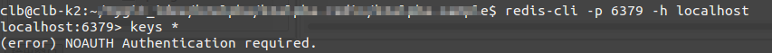
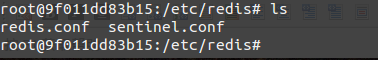
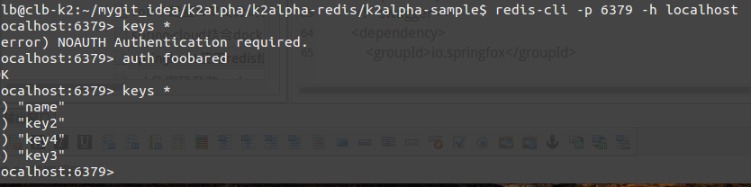
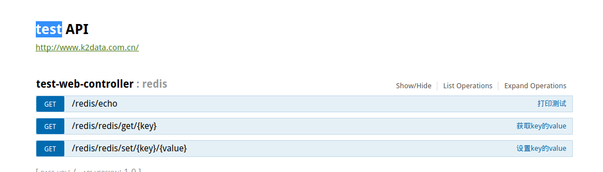
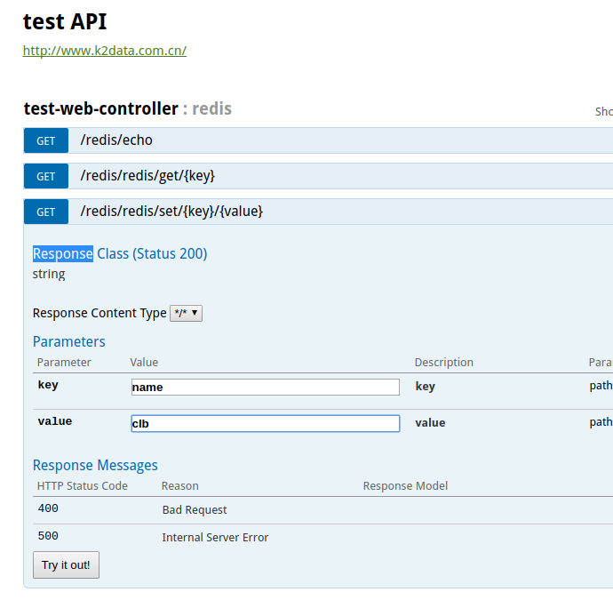
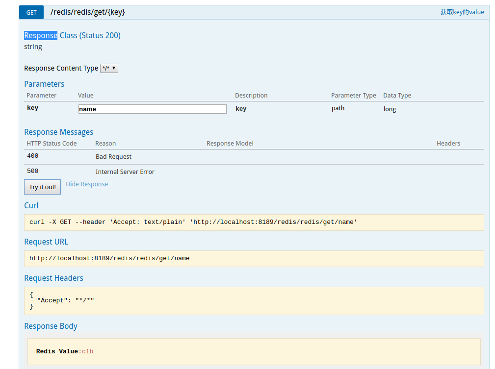

docker下的redis缓存，以及在springboot中的使用
最近项目业务中接受秒级实时数据时，要求每次更新接受时间，和超过10分钟没有接受到数据的设备，要停机
考虑到大量快速的修改和定向属性访问，使用mysql会非常影响性能，所以结合redis做缓存试试
性能还没有测试，先把docker的redis容器生成，和springboot使用redis的方法总结一下
docker下的redis缓存服务器
docker确实是非常厉害，这里不多做介绍，自行了解docker知识
首先在ubuntu下准备docker环境（我使用的ubuntu,所以其他环境的请准备其他的相关docker环境）
写Dockerfile如下：1
2
3
4
5
6
7FROM jdk:8
MAINTAINER <clb7rowrain@gmail.com>
ENTRYPOINT ["java"]
RUN apt-get update
RUN apt-get -y install redis-server
EXPOSE 6379
ENTRYPOINT ["/usr/bin/redis-server"]
打镜像1
docker build -t test-redis:0.1 .
运行1
docker run -d test-redis:0.1
访问测试：

报错(error) NOAUTH Authentication required.
解决：因为redis有密码，需要登陆密码
进入docker容器：
sudo docker exec -it 9f01 /bin/bash

修改redis.conf里面的requirepass yourpassword
再次尝试成功：

springboot中的配置
maven1
2
3
4
5
6
7
8
9
10
11
12
13
14
15
16
17
18
19
20
21<!-- redis -->
<dependency>
<groupId>org.springframework.boot</groupId>
<artifactId>spring-boot-starter-redis</artifactId>
<version>1.4.0.RELEASE</version>
</dependency>
<!-- swagger -->
<dependency>
<groupId>io.springfox</groupId>
<artifactId>springfox-swagger2</artifactId>
<exclusions>
<exclusion>
<groupId>com.google.guava</groupId>
<artifactId>guava</artifactId>
</exclusion>
</exclusions>
</dependency>
<dependency>
<groupId>io.springfox</groupId>
<artifactId>springfox-swagger-ui</artifactId>
</dependency>
主函数1
2
3
4
5
6
7
8
9
10
11
12
13package com.k2data.k2app;
import lombok.extern.log4j.Log4j2;
import org.springframework.boot.SpringApplication;
import org.springframework.boot.autoconfigure.SpringBootApplication;
@Log4j2
@SpringBootApplication
public class Application {
public static void main(String[] args) {
SpringApplication.run(Application.class, args);
log.info("SpringBoot Start Success");
}
}
controller1
2
3
4
5
6
7
8
9
10
11
12
13
14
15
16
17
18
19
20
21
22
23
24
25
26
27
28
29
30
31
32
33
34
35
36
37
38
39
40
41
42
43
44
45
46
47
48
49
package com.k2data.k2app.controller;
import com.k2data.k2app.service.RedisService;
import io.swagger.annotations.Api;
import io.swagger.annotations.ApiImplicitParam;
import io.swagger.annotations.ApiImplicitParams;
import io.swagger.annotations.ApiOperation;
import org.springframework.beans.factory.annotation.Autowired;
import org.springframework.web.bind.annotation.*;
/**
* @Author cuilibo@k2data.com.cn
* @Date 17-12-27 下午2:57.
*/
@Api(description = "redis")
@RestController
@RequestMapping("/redis")
public class TestWebController {
@Autowired
private RedisService redisService;
@ApiOperation(value = "打印测试")
@GetMapping(value = "/echo")
public String echo() {
return "Hello init Docker!!!!!!!!!!!!!!!!!!!";
}
@ApiOperation(value = "获取key的value")
@ApiImplicitParams({
@ApiImplicitParam(name = "key", value = "key", required = true, dataType = "Long", paramType = "path")
})
@GetMapping(value = "/redis/get/{key}")
public String rGet(@PathVariable("key") String key) {
Object vString = redisService.get(key);
System.out.println("redisService:" + vString);
return "Redis Value:" + vString;
}
@ApiOperation(value = "设置key的value")
@ApiImplicitParams({
@ApiImplicitParam(name = "key", value = "key", required = true, dataType = "Long", paramType = "path"),
@ApiImplicitParam(name = "value", value = "value", required = true, dataType = "Long", paramType = "path")
})
@GetMapping(value = "/redis/set/{key}/{value}")
public String rSet(@PathVariable("key") String key, @PathVariable("value") String value) {
redisService.set(key, value);
System.out.println("redisService: SET OK");
return "Redis Value: SET OK key:" + key + ",value:" + value;
}
}
service1
2
3
4
5
6
7
8
9
10
11
12
13
14
15
16
17
18
19
20
21
22
23package com.k2data.k2app.service;
import com.k2data.k2app.util.RedisUtils;
import org.springframework.beans.factory.annotation.Autowired;
import org.springframework.stereotype.Service;
/**
* @Author cuilibo@k2data.com.cn
* @Date 17-12-27 下午2:58.
*/
@Service
public class RedisService {
@Autowired
private RedisUtils redisUtils;
public Object get(String key) {
return redisUtils.getValue(key);
}
public void set(String key, String value) {
redisUtils.setValue(key, value);
}
}
RedisUtils1
2
3
4
5
6
7
8
9
10
11
12
13
14
15
16
17
18
19
20
21
22
23
24
25
26
27
28
29
30
31
32
33
34
35
36
37
38
39
40
41
42
43
44
45
46
47
48
49
50
51
52
53
54
55
56
57
58
59
60
61
62
63
64
65
66
67
68
69
70
71
72
73
74
75
76
77
78
79
80
81
82
83
84
85
86
87
88
89
90
91
92
93
94
95
96
97
98
99
100
101
102
103
104
105
106
107
108
109
110
111
112
113
114
115
116
117
118
119
120
121
122
123
124
125
126
127
128
129
130
131
132
133
134
135
136
137
138
139
140
141
142
143
144
145
146
147
148
149
150
151
152
153
154
155
156
157
158
159
160
161
162
163
164
165
166
167
168
169
170
171
172
173
174
175
176
177
178
179
180
181
182
183
184
185
186
187
188
189
190
191
192
193
194
195
196package com.k2data.k2app.util;
import org.springframework.beans.factory.annotation.Autowired;
import org.springframework.data.redis.core.*;
import org.springframework.stereotype.Component;
import java.io.Serializable;
import java.util.List;
import java.util.Set;
import java.util.concurrent.TimeUnit;
/**
* @Author cuilibo@k2data.com.cn
* @Date 17-12-27 下午2:58.
*/
@Component
public class RedisUtils {
@Autowired
private RedisTemplate redisTemplate;
public void setValue(String key, String value) {
redisTemplate.opsForValue().set(key, value);
}
public Object getValue(String key) {
return redisTemplate.opsForValue().get(key);
}
/**
* 写入缓存
* @param key
* @param value
* @return
*/
public boolean set(final String key, Object value) {
boolean result = false;
try {
ValueOperations<Serializable, Object> operations = redisTemplate.opsForValue();
operations.set(key, value);
result = true;
} catch (Exception e) {
e.printStackTrace();
}
return result;
}
/**
* 写入缓存设置时效时间
* @param key
* @param value
* @return
*/
public boolean set(final String key, Object value, Long expireTime) {
boolean result = false;
try {
ValueOperations<Serializable, Object> operations = redisTemplate.opsForValue();
operations.set(key, value);
redisTemplate.expire(key, expireTime, TimeUnit.SECONDS);
result = true;
} catch (Exception e) {
e.printStackTrace();
}
return result;
}
/**
* 批量删除对应的value
* @param keys
*/
public void remove(final String... keys) {
for (String key : keys) {
remove(key);
}
}
/**
* 批量删除key
* @param pattern
*/
public void removePattern(final String pattern) {
Set<Serializable> keys = redisTemplate.keys(pattern);
if (keys.size() > 0)
redisTemplate.delete(keys);
}
/**
* 删除对应的value
* @param key
*/
public void remove(final String key) {
if (exists(key)) {
redisTemplate.delete(key);
}
}
/**
* 判断缓存中是否有对应的value
* @param key
* @return
*/
public boolean exists(final String key) {
return redisTemplate.hasKey(key);
}
/**
* 读取缓存
* @param key
* @return
*/
public Object get(final String key) {
Object result = null;
ValueOperations<Serializable, Object> operations = redisTemplate.opsForValue();
result = operations.get(key);
return result;
}
/**
* 哈希 添加
* @param key
* @param hashKey
* @param value
*/
public void hmSet(String key, Object hashKey, Object value){
HashOperations<String, Object, Object> hash = redisTemplate.opsForHash();
hash.put(key,hashKey,value);
}
/**
* 哈希获取数据
* @param key
* @param hashKey
* @return
*/
public Object hmGet(String key, Object hashKey){
HashOperations<String, Object, Object> hash = redisTemplate.opsForHash();
return hash.get(key,hashKey);
}
/**
* 列表添加
* @param k
* @param v
*/
public void lPush(String k,Object v){
ListOperations<String, Object> list = redisTemplate.opsForList();
list.rightPush(k,v);
}
/**
* 列表获取
* @param k
* @param l
* @param l1
* @return
*/
public List<Object> lRange(String k, long l, long l1){
ListOperations<String, Object> list = redisTemplate.opsForList();
return list.range(k,l,l1);
}
/**
* 集合添加
* @param key
* @param value
*/
public void add(String key,Object value){
SetOperations<String, Object> set = redisTemplate.opsForSet();
set.add(key,value);
}
/**
* 集合获取
* @param key
* @return
*/
public Set<Object> setMembers(String key){
SetOperations<String, Object> set = redisTemplate.opsForSet();
return set.members(key);
}
/**
* 有序集合添加
* @param key
* @param value
* @param scoure
*/
public void zAdd(String key,Object value,double scoure){
ZSetOperations<String, Object> zset = redisTemplate.opsForZSet();
zset.add(key,value,scoure);
}
/**
* 有序集合获取
* @param key
* @param scoure
* @param scoure1
* @return
*/
public Set<Object> rangeByScore(String key,double scoure,double scoure1){
ZSetOperations<String, Object> zset = redisTemplate.opsForZSet();
return zset.rangeByScore(key, scoure, scoure1);
}
}
RedisConfig1
2
3
4
5
6
7
8
9
10
11
12
13
14
15
16
17
18
19
20
21
22
23
24
25
26
27
28
29
30
31
32
33
34
35
36
37
38
39
40
41
42
43
44
45
46
47
48
49
50
51
52
53
54
55
56
57
58
59
60
61
62
63
64
65
66
67
68
69
70
71
72
73package com.k2data.k2app;
import com.fasterxml.jackson.annotation.JsonAutoDetect;
import com.fasterxml.jackson.annotation.PropertyAccessor;
import com.fasterxml.jackson.databind.ObjectMapper;
import org.springframework.cache.CacheManager;
import org.springframework.cache.annotation.CachingConfigurerSupport;
import org.springframework.cache.annotation.EnableCaching;
import org.springframework.cache.interceptor.KeyGenerator;
import org.springframework.context.annotation.Bean;
import org.springframework.context.annotation.Configuration;
import org.springframework.data.redis.cache.RedisCacheManager;
import org.springframework.data.redis.connection.RedisConnectionFactory;
import org.springframework.data.redis.core.RedisTemplate;
import org.springframework.data.redis.core.StringRedisTemplate;
import org.springframework.data.redis.serializer.Jackson2JsonRedisSerializer;
import java.lang.reflect.Method;
/**
* @Author cuilibo@k2data.com.cn
* @Date 17-12-27 下午3:04.
*/
@Configuration
@EnableCaching
public class RedisConfig extends CachingConfigurerSupport {
/**
* 生成key的策略
* @return
*/
@Override
@Bean
public KeyGenerator keyGenerator() {
return new KeyGenerator() {
@Override
public Object generate(Object target, Method method, Object... params) {
StringBuilder sb = new StringBuilder();
sb.append(target.getClass().getName());
sb.append(method.getName());
for (Object obj : params) {
sb.append(obj.toString());
}
return sb.toString();
}
};
}
/**
* 管理缓存
*/
@Bean
public CacheManager cacheManager(RedisTemplate redisTemplate) {
RedisCacheManager rcm = new RedisCacheManager(redisTemplate);
return rcm;
}
/**
* RedisTemplate配置
*/
@Bean
public RedisTemplate<String, String> redisTemplate(RedisConnectionFactory factory) {
StringRedisTemplate template = new StringRedisTemplate(factory);
Jackson2JsonRedisSerializer jackson2JsonRedisSerializer = new Jackson2JsonRedisSerializer(Object.class);
ObjectMapper om = new ObjectMapper();
om.setVisibility(PropertyAccessor.ALL, JsonAutoDetect.Visibility.ANY);
om.enableDefaultTyping(ObjectMapper.DefaultTyping.NON_FINAL);
jackson2JsonRedisSerializer.setObjectMapper(om);
template.setValueSerializer(jackson2JsonRedisSerializer);
template.afterPropertiesSet();
return template;
}
}
配置文件1
2
3
4
5
6spring:
redis:
database: 0
host: localhost
port: 6379
password: foobared
访问：
http://localhost:8189/swagger-ui.html#


